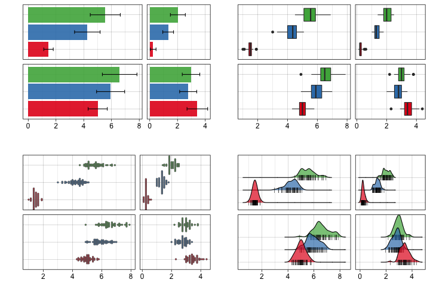
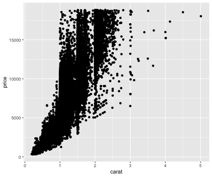
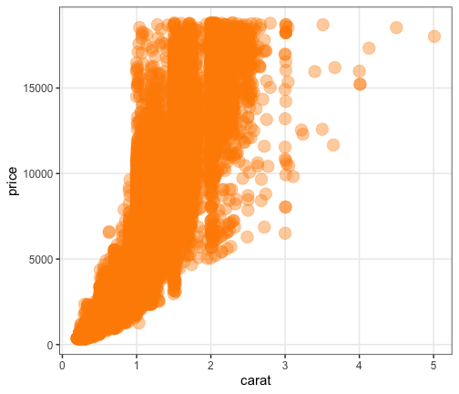
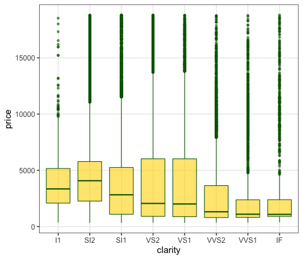

Hands-on Introduction to R 2020
- Why do we use R?
- R basics
- Visualization with R
- Tidying and transforming data with R
- Statistical analysis with R
2020-05-27
データ解析のおおまかな流れ
- コンピュータ環境の整備
- データの取得、読み込み
- 探索的データ解析
- 前処理、加工 (地味。意外と重い。次回の主題)
- 可視化、仮説生成 (派手！楽しい！今回の主題)
- 統計解析、仮説検証 (みんな勉強したがる)
- 報告、発表

そもそもなぜ解析？ 生の数字見ればよくない？
生データは情報が多すぎて関係性も何も見えない
print(diamonds)
carat cut color clarity depth table price x y z
<dbl> <ord> <ord> <ord> <dbl> <dbl> <int> <dbl> <dbl> <dbl>
1 0.23 Ideal E SI2 61.5 55 326 3.95 3.98 2.43
2 0.21 Premium E SI1 59.8 61 326 3.89 3.84 2.31
3 0.23 Good E VS1 56.9 65 327 4.05 4.07 2.31
4 0.29 Premium I VS2 62.4 58 334 4.20 4.23 2.63
--
53937 0.72 Good D SI1 63.1 55 2757 5.69 5.75 3.61
53938 0.70 Very Good D SI1 62.8 60 2757 5.66 5.68 3.56
53939 0.86 Premium H SI2 61.0 58 2757 6.15 6.12 3.74
53940 0.75 Ideal D SI2 62.2 55 2757 5.83 5.87 3.64
ダイヤモンド53,490個について10項目の値を持つ data.frame
要約統計量(平均とか分散とか)を見てみる
まあ何となく分かった気になる…?
summary(diamonds)
carat cut color clarity depth table price x y z
Min. :0.2000 Fair : 1610 D: 6775 SI1 :13065 Min. :43.00 Min. :43.00 Min. : 326 Min. : 0.000 Min. : 0.000 Min. : 0.000
1st Qu.:0.4000 Good : 4906 E: 9797 VS2 :12258 1st Qu.:61.00 1st Qu.:56.00 1st Qu.: 950 1st Qu.: 4.710 1st Qu.: 4.720 1st Qu.: 2.910
Median :0.7000 Very Good:12082 F: 9542 SI2 : 9194 Median :61.80 Median :57.00 Median : 2401 Median : 5.700 Median : 5.710 Median : 3.530
Mean :0.7979 Premium :13791 G:11292 VS1 : 8171 Mean :61.75 Mean :57.46 Mean : 3933 Mean : 5.731 Mean : 5.735 Mean : 3.539
3rd Qu.:1.0400 Ideal :21551 H: 8304 VVS2 : 5066 3rd Qu.:62.50 3rd Qu.:59.00 3rd Qu.: 5324 3rd Qu.: 6.540 3rd Qu.: 6.540 3rd Qu.: 4.040
Max. :5.0100 I: 5422 VVS1 : 3655 Max. :79.00 Max. :95.00 Max. :18823 Max. :10.740 Max. :58.900 Max. :31.800
J: 2808 (Other): 2531
平均値ばかり見て可視化を怠ると構造を見逃す


データ可視化の重要性
情報の整理 → 正しい解析・新しい発見・仮説生成
データ可視化の重要性
情報の整理 → 正しい解析・新しい発見・仮説生成


そうは言ってもセンスでしょ? — NO!


ある程度はテクニックであり教養。
デザインの基本的なルールを
知りさえすれば誰でも上達する。

同じデータでも見せ方で印象が変わる
平均値の差？ ばらつきの様子？ 軸はゼロから始まる？
目的に合わせて見せ方を吟味しよう。

こんな感じの図もRでラクラク描けるよ


Visualization with R: Index
Visualization is important(済)- R base plot
- ggplot2 package
- basics
- facetting
- save images


data.frame
iris はアヤメ属3種150個体に関する測定データ。
Rに最初から入ってて、例としてよく使われる。
print(iris)
Sepal.Length Sepal.Width Petal.Length Petal.Width Species
<dbl> <dbl> <dbl> <dbl> <fct>
1 5.1 3.5 1.4 0.2 setosa
2 4.9 3.0 1.4 0.2 setosa
3 4.7 3.2 1.3 0.2 setosa
4 4.6 3.1 1.5 0.2 setosa
--
147 6.3 2.5 5.0 1.9 virginica
148 6.5 3.0 5.2 2.0 virginica
149 6.2 3.4 5.4 2.3 virginica
150 5.9 3.0 5.1 1.8 virginica
長さ150の数値ベクトル4本と因子ベクトル1本。
R標準のグラフィックス
描けるっちゃ描けるけど。カスタマイズしていくのは難しい。
plot(iris$Sepal.Length, iris$Sepal.Width)

R標準のグラフィックス
描けるっちゃ描けるけど。カスタマイズしていくのは難しい。
hist(iris$Petal.Length)

R標準のグラフィックス
描けるっちゃ描けるけど。カスタマイズしていくのは難しい。
plot(density(iris$Petal.Length))
R標準のグラフィックス
描けるっちゃ描けるけど。カスタマイズしていくのは難しい。
boxplot(Petal.Width ~ Species, data = iris)

きれいなグラフを簡単に描けるパッケージを使いたい。
ggplot2

- tidyverseパッケージ群のひとつ
- “The Grammer of Graphics” という体系に基づく設計
- 単にいろんなグラフを「描ける」だけじゃなく
一貫性のある文法で合理的に描ける


いきなりggplot2から使い始めても大丈夫
R標準のやつとは根本的に違うシステムで作図する。
基本的な使い方: 指示を + で重ねていく

基本的な使い方: 指示を + で重ねていく
ggplot(data = diamonds) # diamondsデータでキャンバス準備
# aes(x = carat, y = price) + # carat,price列をx,y軸にmapping
# geom_point() + # 散布図を描く
# facet_wrap(~ clarity) + # clarity列に応じてパネル分割
# stat_smooth(method = lm) + # 直線回帰を追加
# coord_cartesian(ylim = c(0, 2e4)) + # y軸の表示範囲を狭く
# theme_classic(base_size = 20) # クラシックなテーマで
基本的な使い方: 指示を + で重ねていく
ggplot(data = diamonds) + # diamondsデータでキャンバス準備
aes(x = carat, y = price) # carat,price列をx,y軸にmapping
# geom_point() + # 散布図を描く
# facet_wrap(~ clarity) + # clarity列に応じてパネル分割
# stat_smooth(method = lm) + # 直線回帰を追加
# coord_cartesian(ylim = c(0, 2e4)) + # y軸の表示範囲を狭く
# theme_classic(base_size = 20) # クラシックなテーマで
基本的な使い方: 指示を + で重ねていく
ggplot(data = diamonds) + # diamondsデータでキャンバス準備
aes(x = carat, y = price) + # carat,price列をx,y軸にmapping
geom_point() # 散布図を描く
# facet_wrap(~ clarity) + # clarity列に応じてパネル分割
# stat_smooth(method = lm) + # 直線回帰を追加
# coord_cartesian(ylim = c(0, 2e4)) + # y軸の表示範囲を狭く
# theme_classic(base_size = 20) # クラシックなテーマで
基本的な使い方: 指示を + で重ねていく
ggplot(data = diamonds) + # diamondsデータでキャンバス準備
aes(x = carat, y = price) + # carat,price列をx,y軸にmapping
geom_point() + # 散布図を描く
facet_wrap(~ clarity) # clarity列に応じてパネル分割
# stat_smooth(method = lm) + # 直線回帰を追加
# coord_cartesian(ylim = c(0, 2e4)) + # y軸の表示範囲を狭く
# theme_classic(base_size = 20) # クラシックなテーマで

基本的な使い方: 指示を + で重ねていく
ggplot(data = diamonds) + # diamondsデータでキャンバス準備
aes(x = carat, y = price) + # carat,price列をx,y軸にmapping
geom_point() + # 散布図を描く
facet_wrap(~ clarity) + # clarity列に応じてパネル分割
stat_smooth(method = lm) # 直線回帰を追加
# coord_cartesian(ylim = c(0, 2e4)) + # y軸の表示範囲を狭く
# theme_classic(base_size = 20) # クラシックなテーマで
基本的な使い方: 指示を + で重ねていく
ggplot(data = diamonds) + # diamondsデータでキャンバス準備
aes(x = carat, y = price) + # carat,price列をx,y軸にmapping
geom_point() + # 散布図を描く
facet_wrap(~ clarity) + # clarity列に応じてパネル分割
stat_smooth(method = lm) + # 直線回帰を追加
coord_cartesian(ylim = c(0, 2e4)) # y軸の表示範囲を狭く
# theme_classic(base_size = 20) # クラシックなテーマで
基本的な使い方: 指示を + で重ねていく
ggplot(data = diamonds) + # diamondsデータでキャンバス準備
aes(x = carat, y = price) + # carat,price列をx,y軸にmapping
geom_point() + # 散布図を描く
facet_wrap(~ clarity) + # clarity列に応じてパネル分割
stat_smooth(method = lm) + # 直線回帰を追加
coord_cartesian(ylim = c(0, 2e4)) + # y軸の表示範囲を狭く
theme_classic(base_size = 20) # クラシックなテーマで
基本的な使い方: 指示を + で重ねていく
ggplot(data = diamonds) + # diamondsデータでキャンバス準備
aes(x = carat, y = price) + # carat,price列をx,y軸にmapping
geom_point() + # 散布図を描く
# facet_wrap(~ clarity) + # clarity列に応じてパネル分割
# stat_smooth(method = lm) + # 直線回帰を追加
# coord_cartesian(ylim = c(0, 2e4)) + # y軸の表示範囲を狭く
theme_classic(base_size = 20) # クラシックなテーマで
途中経過オブジェクトを取っておける
p1 = ggplot(data = diamonds)
p2 = p1 + aes(x = carat, y = price)
p3 = p2 + geom_point()
p4 = p3 + facet_wrap(~ clarity)
print(p3)

普段はあんまりやらなけど、今日は p2 とか使う
よくあるエラー
関数名を ggplot2 だと勘違い:
> ggplot2(diamonds)
Error in ggplot2(diamonds) : could not find function "ggplot2"
ggplot2 はパッケージ名。
今度こそ関数名は合ってるはずなのに…
> ggplot(diamonds)
Error in ggplot(diamonds) : could not find function "ggplot"
パッケージ読み込みを忘れてた。新しくRを起動するたびに必要:
library(tidyverse) # includes ggplot2
ggplot(diamonds) # OK!
ggplot() に渡すのは整然データ tidy data
- 1行は1つの観測
- 1列は1つの変数
- 1セルは1つの値
- この列をX軸、この列をY軸、この列で色わけ、と指定できる！
print(diamonds)
carat cut color clarity depth table price x y z
<dbl> <ord> <ord> <ord> <dbl> <dbl> <int> <dbl> <dbl> <dbl>
1 0.23 Ideal E SI2 61.5 55 326 3.95 3.98 2.43
2 0.21 Premium E SI1 59.8 61 326 3.89 3.84 2.31
3 0.23 Good E VS1 56.9 65 327 4.05 4.07 2.31
4 0.29 Premium I VS2 62.4 58 334 4.20 4.23 2.63
--
53937 0.72 Good D SI1 63.1 55 2757 5.69 5.75 3.61
53938 0.70 Very Good D SI1 62.8 60 2757 5.66 5.68 3.56
53939 0.86 Premium H SI2 61.0 58 2757 6.15 6.12 3.74
53940 0.75 Ideal D SI2 62.2 55 2757 5.83 5.87 3.64
参考:
data(package = "ggplot2")
https://r4ds.had.co.nz/tidy-data.html
https://speakerdeck.com/fnshr/zheng-ran-detatutenani
Aesthetic mapping でデータと見せ方を紐付け
aes() の中で列名を指定する。
p1 + aes(x = carat, y = price) +
geom_point(mapping = aes(color = color, size = clarity))

データによらず一律でaestheticsを変える
aes() の外で値を指定する。
p1 + aes(x = carat, y = price) +
geom_point(color = "darkorange", size = 6, alpha = 0.4)

aesthetics一覧
点と線と文字は color, 面は fill
p1 + aes(x = clarity, y = price) +
geom_boxplot(color = "darkgreen", fill = "gold", alpha = 0.6)

色パレットの変更 scale_color_*()
個々の色を自分で決めず、既存のパレットを利用するのが吉。
e.g., ColorBrewer,
viridis
(色覚多様性・グレースケール対策にも有効)
p2 + geom_point(mapping = aes(color = color)) +
scale_color_viridis_d(option = "plasma") + theme_dark()
# scale_color_brewer(palette = "Spectral")
値に応じてパネル切り分け (1変数facet)
ggplotの真骨頂！ これをR標準機能でやるのは結構たいへん。
p3 + facet_wrap(~ clarity, ncol = 4L)

値に応じてパネル切り分け (≥2変数facet)
ggplotの真骨頂！ これをR標準機能でやるのは結構たいへん。
p3 + facet_grid(cut ~ clarity)
多変量データの俯瞰、5次元くらいまで有効
値を変えず座標軸を変える scale_*, coord_*
p2 + geom_point(alpha = 0.25) +
scale_x_log10() +
scale_y_log10(breaks = c(1, 2, 5, 10) * 1000) +
coord_cartesian(xlim = c(0.1, 10), ylim = c(800, 12000)) +
labs(title = "Diamonds", x = "Size (carat)", y = "Price (USD)")
データと関係ない部分の見た目を調整 theme
既存の theme_*()
をベースに、theme()関数で微調整。
p3 + theme_bw() + theme(
panel.background = element_rect(fill = "white"), # 箱
panel.grid = element_line(color = "blue"), # 線
axis.title = element_text(size = 32), # 文字
axis.text = element_blank() # 消す
)
基本的な使い方: 指示を + で重ねていく
論文のFigureみたいに並べる
別のパッケージ (cowplot や patchwork) の助けを借りて
pAB = cowplot::plot_grid(p3, p3, labels = c("A", "B"), nrow = 1L)
cowplot::plot_grid(pAB, p3, labels = c("", "C"), ncol=1L)
ファイル名もサイズも再現可能な作図
widthやheightが小さいほど、文字・点・線が相対的に大きく
# 7inch x 300dpi = 2100px四方 (デフォルト)
ggsave("dia1.png", p3) # width = 7, height = 7, dpi = 300
# 4 x 300 = 1200 全体7/4倍ズーム
ggsave("dia2.png", p3, width = 4, height = 4) # dpi = 300
# 2 x 600 = 1200 全体をさらに2倍ズーム
ggsave("dia3.png", p3, width = 2, height = 2, dpi = 600)
# 4 x 300 = 1200 テーマを使って文字だけ拡大
ggsave("dia4.png", p3 + theme_bw(base_size = 22), width = 4, height = 4)


他にどんな種類の geom_*() が使える？
なんでもある。 公式サイトを見に行こう。


微調整してくと最終的に長いコードになるね…
うん。でもすべての点について後から確認できるし、使い回せる！
ggplot(diamonds) +
geom_boxplot(aes(y = carat, x = cut, color = cut)) +
theme_classic(base_size = 15, base_family = "Helvetica") +
coord_cartesian(ylim = c(-1, 6)) +
labs(title = "Diamonds", x = "Size (carat)", y = "Price (USD)") +
theme(axis.title.x = element_text(color = "black", size = 30),
axis.title.y = element_text(color = "black", size = 30),
axis.text.x = element_blank(),
axis.text.y = element_text(color = "black", size = 30),
axis.line.x = element_line(),
axis.line.y = element_line(),
axis.ticks.length = unit(8, "pt"),
panel.background = element_blank(),
panel.grid.major = element_blank(),
panel.grid.minor = element_blank(),
legend.position = "none",
plot.margin = grid::unit(c(0.5, 0.5, 1, 0.5), "lines"))
発展的な内容
- ggplot2をさらに拡張するパッケージも続々
- アニメーション gganimate
- 重なりを避けてラベル付け ggrepel
- グラフ/ネットワーク ggraph
- 系統樹 ggtree
- 地図
geom_sf - 学術論文向けのいろいろ ggpubr
Summary: Visualization with R
✅ まずデータ全体を可視化してみよう
✅ 一貫性のある文法で合理的に描けるggplot2
✅ 画像出力まできっちりプログラミング
- 手元のデータでいろいろ可視化してみよう
- e.g.,
iris,diamonds,mpg,economics,txhousing.
参考
- R for Data Science — Hadley Wickham and Garrett Grolemund
- https://r4ds.had.co.nz/
- Book
- 日本語版書籍(Rではじめるデータサイエンス)
- Older versions
- 「Rにやらせて楽しよう — データの可視化と下ごしらえ」 岩嵜航 2018
- 「Rを用いたデータ解析の基礎と応用」石川由希 2019 名古屋大学
- 「Rによるデータ前処理実習」 岩嵜航 2019 東京医科歯科大
- ggplot2公式ドキュメント
- https://ggplot2.tidyverse.org/